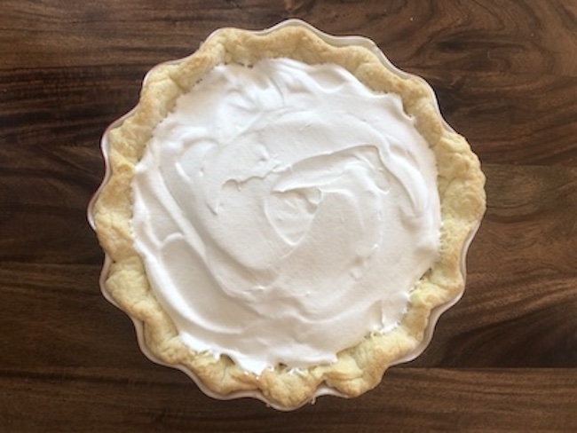

Warning: This is possibly the best dessert you will ever have in your life. And, also, it’s not healthy by any definition of health. So be careful.

This is a no-bake pie, all the fillings are prepared on the stovetop. Please do not buy a premade crust, this pie is deserving of a homemade one. I recommend following my recipe for Pie Crust and blind baking it.
First we will infuse our half-and-half with banana flavor. To do this, slice 2 of your bananas into 1/2 inch thick pieces. Melt 1 tablespoon of butter in a saucepan and add the bananas, cooking them for just a few minutes until they soften up. Add the half-and-half and bring mixture to a boil. Remove from heat and let sit for around 40 minutes. During this time, the banana will basically be imparting its flavors in to the cream.
After 40 minutes, strain the mixture into a bowl and discard the bananas. Make sure not to press down on the bananas to extract every last drop - there’s just no need here.
Now, take a large bowl and whisk sugar, egg yolks, and salt until smooth. Whisk in the cornstarch and the infused half-and-half mixture. Then put it all into a saucepan and slowly heat up until thickened to the consistency of pudding. If you have a digital thermometer, 180 degrees should be your target. Once reached, remove from heat and whisk in the remaining 2 tablespoons of butter and the vanilla. Transfer this cream to a bowl and top with a greased sheet of parchment paper pressed directly against the top (to avoid a pudding skin) and let cool for around an hour.
Once cool, give the cream a quick whisk and peel and slice the remaining 2 bananas to 1/4 thick pieces and toss them with the orange juice. I’ll usually just squeeze a fresh orange on top of them. This step isn’t totally necessary but helps prevent browning on the bananas and adds just a tiny amount of acidity to an otherwise overly sweet dessert. Take your blind baked pie shell (which should also be cool by now) and prepare to fill it.
Spread about half the cream over the bottom of the pie shell. Arrange the sliced bananas on top, one layer thick. Top with the remaining cream. Whip the whipping cream and spread it on top of the pie. Refridgerate until set and serve cold.